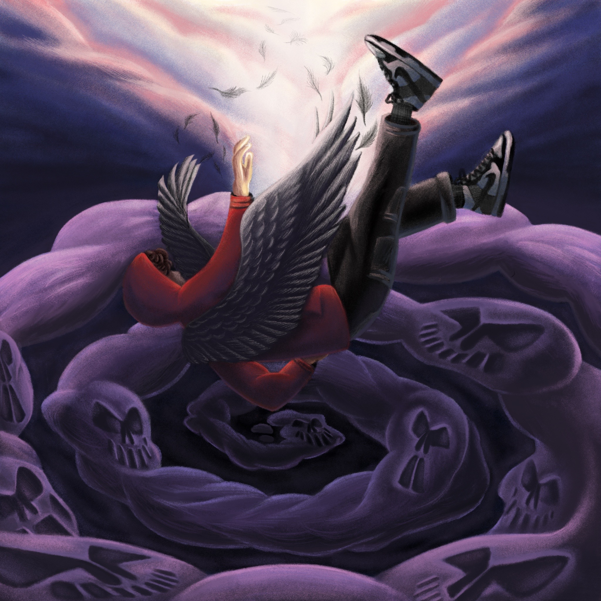
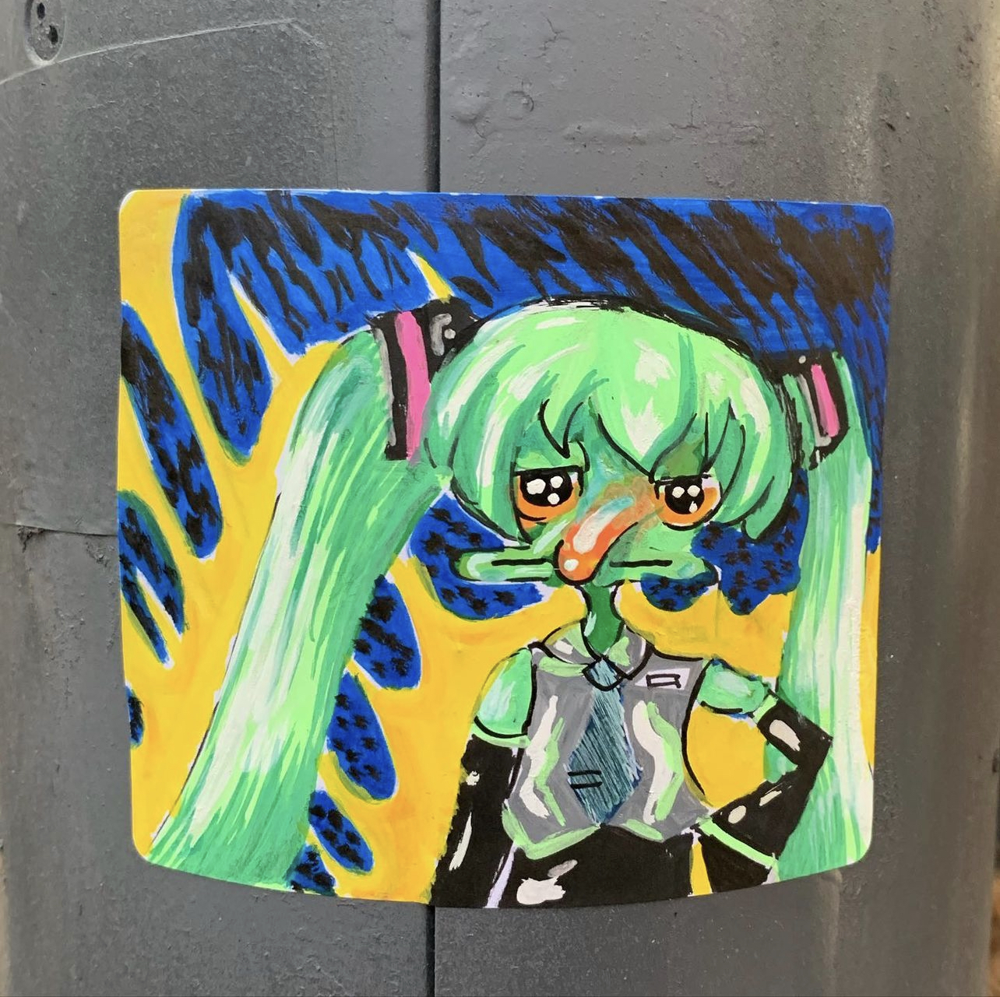
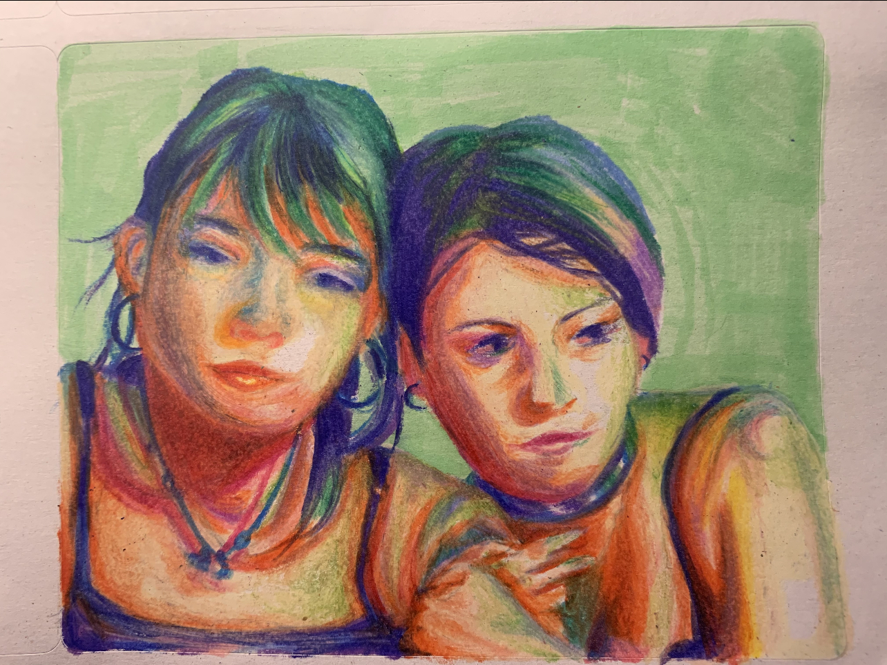
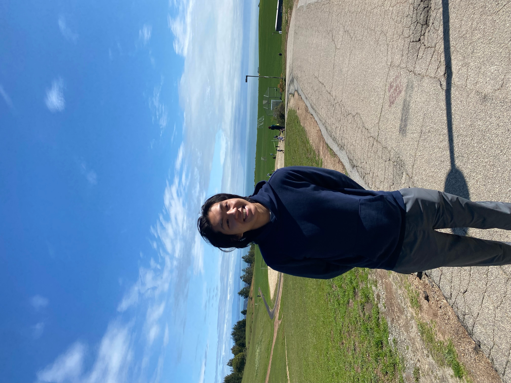

Nathan Lam
  
My name is Nathan! And I'm a second year AGPM major at the University of California Santa Cruz. My hobbies include drawing and painting, but lately I have been intersted in graffitti culture and tagging. I love listening to music. Pop, electronic, alternative, and kpop are some of my favorite genres. I'm also fascinated by fashion of the past decades as well as newer designers that border on futuristic attire. In my free time when I'm not doing art, I'm watching movies or the latest TV shows. I love any media, or thing, that I can consume, as I am also a major foodie.
I was born and raised in San Jose, CA, and I am proud to call myself a Bay Arean. I took art classes for about 10 years in my childhood, that's almost half of my entire life! In Junior year I interned at the art classes to be an assistant teacher, and later became an employed table teacher in 2022, mentoring art students in elementary to high school ages.